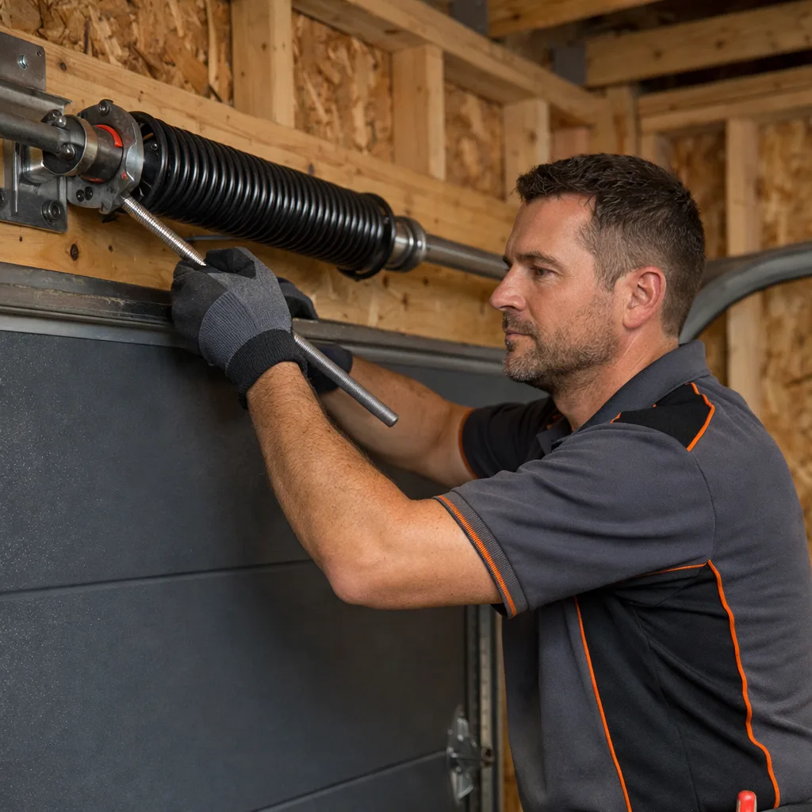

<section class="service-block repairs-block">
  <div class="service-container">
    
    <div class="service-content">
      <span class="service-tag">Urgent Service Response</span>
      <h2>Emergency Garage Door Repairs In <span class="target-area">Peterborough</span></h2>
      <p class="service-lead">If your garage door is stuck open, jammed halfway, or won’t lock securely, it’s more than an inconvenience — it leaves your home exposed. Local engineers can often offer same‑day or next‑day attendance for urgent repair issues.</p>
      
      <div class="keyword-grid">
        <div class="keyword-item">🚨 Door Stuck Open</div>
        <div class="keyword-item">🔧 Snapped Springs or Cables</div>
        <div class="keyword-item">⚡ Vehicle Impact Damage</div>
        <div class="keyword-item">🛠️ Immobile Motor Failures</div>
      </div>

      <p class="contextual-text">
        Don’t leave your garage or tools vulnerable. Share a few details about the problem and your location in Peterborough, and we’ll arrange for a local technician to get in touch quickly to diagnose the issue and restore your door safely. If security can’t wait, contact our <a href="tel:[Phone Number]" class="contextual-link">emergency repair specialists in <span class="target-area">Peterborough</span></a> to request a fast callout.
      </p>
    </div>

    <div class="service-image-placeholder">
      
    </div>

  </div>
</section>
